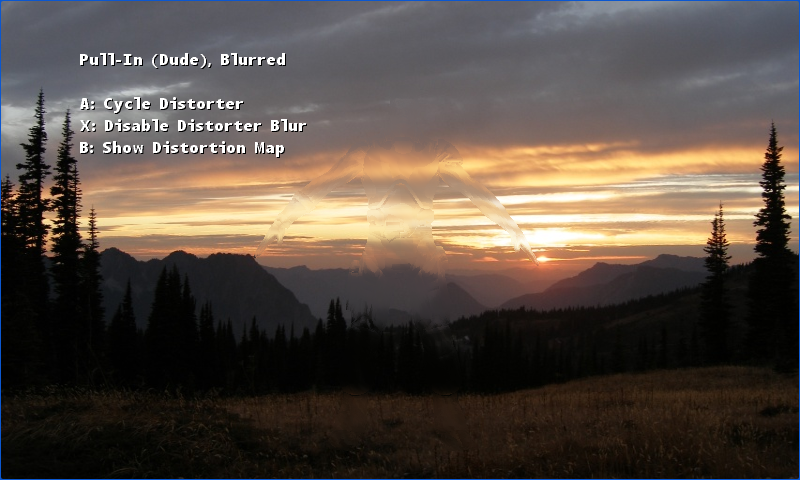

Distortion
Ported from Microsoft's XNA 4.0 Distortion sample.
Source for this sample on GitHub ↗

Play ▸Opens in a new tab. Use A to change the distorter, B to inspect its map, and X to toggle blur.
About this sample
A scene is rendered to a texture, while a model generates a two-dimensional map of how to displace its pixels. A final pass applies that map to the scene. Switch between a Pull-In invisibility cloak, animated Heat-Haze and Displacement-Mapped privacy glass; the optional Gaussian blur softens the distorted region.
Controls
| Action | Keyboard | Gamepad |
|---|---|---|
| Next distorter | A or Space | A |
| Show distortion map | B or Tab | B |
| Toggle blur | X or Left Ctrl | X |
| Rotate camera | Left / Right arrows | Left stick |
| Exit | Escape | Back |